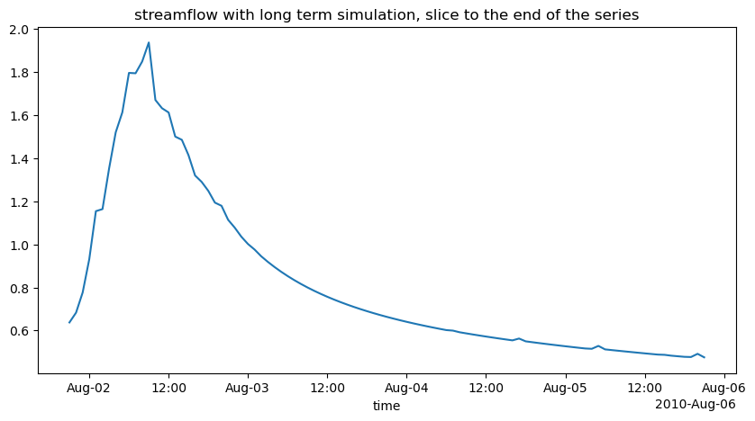
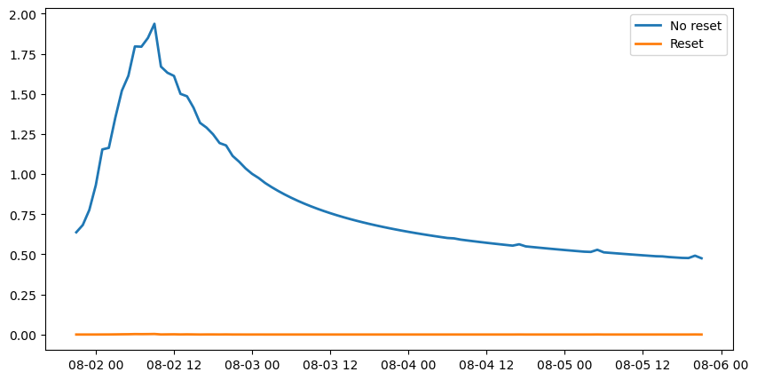
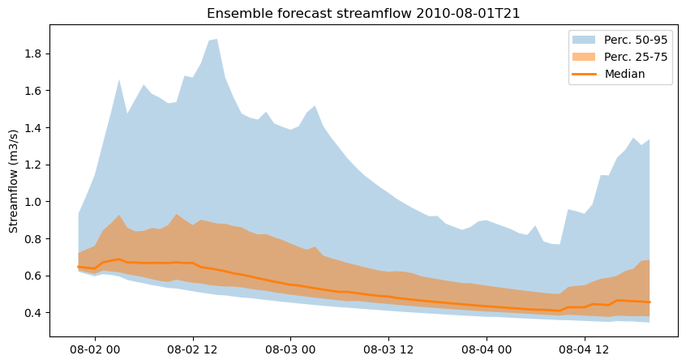
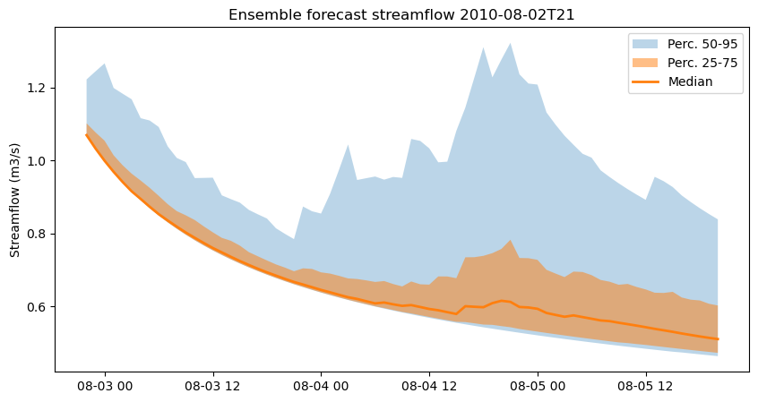
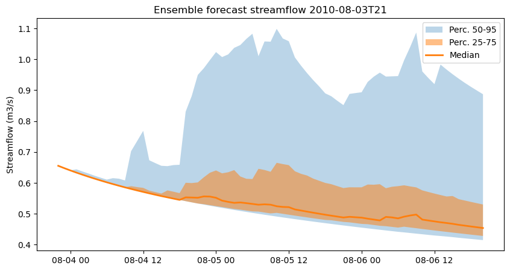
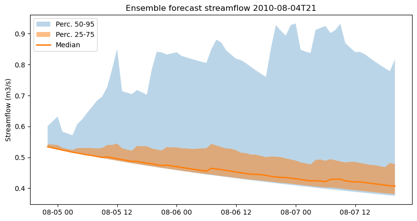

Ensemble SWIFT model runs¶
About this document¶
from swift2.doc_helper import pkg_versions_info
print(pkg_versions_info("This document was generated from a jupyter notebook"))
This document was generated from a jupyter notebook on 2025-03-27 17:23:03.954002
swift2 2.5.1
uchronia 2.6.2
Imports¶
import os
import matplotlib.pyplot as plt
import numpy as np
import pandas as pd
import swift2.doc_helper as std
import swift2.parameteriser as sp
import swift2.play_record as spr
import uchronia.sample_data as usd
import xarray as xr
from swift2.const import CATCHMENT_FLOWRATE_VARID
from swift2.simulation import get_subarea_ids
from swift2.utils import mk_full_data_id, paste0
from uchronia.data_set import datasets_summaries, get_dataset_ids
Synthetic catchment¶
Let's create a test catchment with a few subareas. Since we will work in a simulation mode, not calibration, we can afford a fairly arbitrary structure.
A catchment structure can be captured with a set of items about subareas, links and nodes, and the connectivity of links and nodes
node_ids=paste0('n', [i+1 for i in range(6)])
link_ids = paste0('lnk', [i+1 for i in range(5)])
node_names = paste0(node_ids, '_name')
link_names = paste0(link_ids, '_name')
from_node = paste0('n', [2,5,4,3,1])
to_node = paste0('n', [6,2,2,4,4])
areas_km2 = np.array([1.2, 2.3, 4.4, 2.2, 1.5])
simulation = std.create_catchment(node_ids, node_names, link_ids, link_names, from_node, to_node, runoff_model, areas_km2)
{'subareas': {'lnk1': 'lnk1_name',
'lnk2': 'lnk2_name',
'lnk3': 'lnk3_name',
'lnk4': 'lnk4_name',
'lnk5': 'lnk5_name'},
'nodes': {'n1': 'n1_name',
'n2': 'n2_name',
'n3': 'n3_name',
'n4': 'n4_name',
'n5': 'n5_name',
'n6': 'n6_name'},
'links': {'lnk1': 'lnk1_name',
'lnk2': 'lnk2_name',
'lnk3': 'lnk3_name',
'lnk4': 'lnk4_name',
'lnk5': 'lnk5_name'}}
Input data management¶
Working with ensemble time series is complicated.
The package uchronia includes facilities to access time series from a "library", akin to what you would do to manage books. This hides a lot of the lower level code for reading and writing file. To an extent, the python package xarray overlaps with the features of these uchronia data libraries, but do not fully supersede them.
Let's load a predefined data library with data for the Upper Murray river.
if not 'SWIFT_TEST_DIR' in os.environ:
os.environ['SWIFT_TEST_DIR'] = os.path.expanduser('~/data/documentation')
CFFI pointer handle to a native pointer of type id "ENSEMBLE_DATA_SET_PTR"
['pet_fcast_ens', 'pet_obs', 'rain_obs', 'rain_fcast_ens']
{'pet_fcast_ens': 'variable name: pet_der, identifier: 1, start: 1989-12-31T00:00:00, end: 2012-12-30T00:00:00, time length: 8401, time step: daily',
'pet_obs': 'variable name: pet_der, identifier: 1, start: 1988-12-31T00:00:00, end: 2012-12-30T00:00:00, time length: 8766, time step: daily',
'rain_obs': 'variable name: rain_der, identifier: 1, start: 1989-12-31T13:00:00, end: 2012-10-31T12:00:00, time length: 200160, time step: hourly',
'rain_fcast_ens': 'variable name: rain_fcast_ens, identifier: 1, index: 0, start: 2010-08-01T21:00:00, end: 2010-08-06T21:00:00, time length: 5, time step: <not yet supported>'}
The sample catchment structure is obviously not the real "Upper Murray". For the sake of a didactic example, let's set the same inputs across all the subareas.
<xarray.DataArray (ensemble: 1, time: 200160)> Size: 2MB
array([[-9999., -9999., -9999., ..., -9999., -9999., -9999.]],
shape=(1, 200160))
Coordinates:
* ensemble (ensemble) int64 8B 0
* time (time) datetime64[ns] 2MB 1989-12-31T14:00:00 ... 2012-10-31T13...
array(['1989-12-31T14:00:00.000000000', '1989-12-31T15:00:00.000000000',
'1989-12-31T16:00:00.000000000', ...,
'2012-10-31T01:00:00.000000000', '2012-10-31T02:00:00.000000000',
'2012-10-31T03:00:00.000000000'],
shape=(200150,), dtype='datetime64[ns]')
Note that the rainfall is hourly, but the pet is daily. This will matter later for the simulation
<xarray.DataArray 'time' (time: 8756)> Size: 70kB
array(['1989-01-01T00:00:00.000000000', '1989-01-02T00:00:00.000000000',
'1989-01-03T00:00:00.000000000', ..., '2012-12-19T00:00:00.000000000',
'2012-12-20T00:00:00.000000000', '2012-12-21T00:00:00.000000000'],
shape=(8756,), dtype='datetime64[ns]')
Coordinates:
* time (time) datetime64[ns] 70kB 1989-01-01 1989-01-02 ... 2012-12-21Setting simulation inputs by reading from a data library¶
swift simulations have a play_inputs (with an s) method designed to retrieve inputs from a library.
play_inputs can accept vectorised arguments, which is handy for cases like the following:
For each precipitation model input, use the same time series 'rain_obs' from the data library.
precip_ids = mk_full_data_id( 'subarea', get_subarea_ids(simulation), 'P')
evapIds = mk_full_data_id( 'subarea', get_subarea_ids(simulation), 'E')
precip_ids, evapIds
(['subarea.lnk1.P',
'subarea.lnk2.P',
'subarea.lnk3.P',
'subarea.lnk4.P',
'subarea.lnk5.P'],
['subarea.lnk1.E',
'subarea.lnk2.E',
'subarea.lnk3.E',
'subarea.lnk4.E',
'subarea.lnk5.E'])
def _rep(x): return np.repeat(x, len(precip_ids))
simulation.play_inputs(data_library, precip_ids, _rep('rain_obs'), _rep(''))
We noted that the pet_obs is a daily series, not hourly as per . swift2 can disaggregate on the fly, using the 'daily_to_hourly' method when assigning inputs to the simulation. This saves a lot of tedium!
simulation.play_inputs(data_library, evapIds, _rep('pet_obs'), _rep('daily_to_hourly'))
# And the flow rate we will record
outflow_id = CATCHMENT_FLOWRATE_VARID
Given the information from the input data, let's define a suitable simulation time span. We have define an ensemble simulation where we will do a warmup simulation on a single input (no "ensemble") for 3 years or so, then five days of an ensemble simulation.
from cinterop.timeseries import as_timestamp
s = as_timestamp('2007-01-01')
e = as_timestamp('2010-08-01 20')
s_hot = as_timestamp('2010-08-01 21')
e_hot = as_timestamp('2010-08-05 21')
Warmup the simulation to get 'hot' states¶
First, before demonstrating ensemble forecasting simulations, let's demonstrate how we can get a snapshot of the model states at a point in time and restore it later on, hot-starting further simulation.
We deliberately get into details here to illustrate how to capture states, and run simulation without or without state reset.
simulation.set_simulation_span(start=s, end=e_hot)
simulation.record_state(outflow_id)
simulation.exec_simulation()
baseline = simulation.get_recorded(outflow_id)
baseline.plot(figsize=(10,5))
plt.title("streamflow with long term simulation, slice to the end of the series")
Text(0.5, 1.0, 'streamflow with long term simulation, slice to the end of the series')

simulation.set_simulation_span(start=s, end=e)
simulation.exec_simulation()
snapshot = simulation.snapshot_state()
We can execute a simulation over the new time span, but requesting model states to NOT be reset. If we compare with a simulation where, as per default, the states are reset before the first time step, we notice a difference:
simulation.set_simulation_span(start=s_hot, end=e_hot)
simulation.exec_simulation(reset_initial_states = False)
noReset = simulation.get_recorded(outflow_id)
simulation.exec_simulation(reset_initial_states = True)
withReset = simulation.get_recorded(outflow_id)
noReset = noReset.squeeze(drop=True)
x = xr.concat([noReset,withReset], dim=pd.Index(['no reset','reset'], name='scenario')).squeeze(drop=True)
fig, ax = plt.subplots(figsize=(10,5))
ax.plot(x.time.values, x.sel(scenario='no reset'), linewidth=2, label='No reset')
ax.plot(x.time.values, x.sel(scenario='reset'), linewidth=2, label='Reset')
ax.legend()
plt.show()

The simulation hot-started and run with no reset is like the previous long simulation baseline. If we reset the states to zero, we even have ho streamflow yet produced over these 5 days...
Ensemble forecasts¶
Now let'd ready the simulation to do ensemble forecasts. We define a list inputMap such that keys are the names of ensemble forecast time series found in data_library and the values is one or more of the model properties found in the simulation. In this instance we use the same series for all model precipitation inputs in precip_ids
ems = simulation.create_ensemble_forecast_simulation(
data_library,
start=s_hot,
end=e_hot,
input_map=inputMap,
lead_time=(24*2+23),
ensemble_size=100,
n_time_steps_between_forecasts=24)
CFFI pointer handle to a native pointer of type id "ENSEMBLE_FORECAST_SIMULATION_PTR"
ems is an ensemble forecast simulation object, which is an augmentation of the Simulation object that deals with non-ensemble simulation. It is very important to note that whenever possible, the object methods are named identically, just that the time series in and out of the simulations are of higher dimension.
{'start': datetime.datetime(2010, 8, 1, 21, 0),
'end': datetime.datetime(2010, 8, 4, 21, 0),
'time step': 'hourly'}
ems.record_state(outflow_id)
ems.exec_simulation()
forecasts = ems.get_recorded_ensemble_forecast(outflow_id)
uchronia.classes.EnsembleForecastTimeSeries
We have four forecast issue times:
DatetimeIndex(['2010-08-01 21:00:00', '2010-08-02 21:00:00',
'2010-08-03 21:00:00', '2010-08-04 21:00:00'],
dtype='datetime64[ns]', freq='D')
We can retrieve the first forecast issues at '2010-08-01 21:00:00' by indexing
<xarray.DataArray (ensemble: 100, time: 71)> Size: 57kB
array([[0.8898914 , 0.97225084, 1.05916427, ..., 0.76254716, 0.6787237 ,
0.6702664 ],
[0.63547795, 0.62744525, 0.61985413, ..., 0.47899561, 0.48934704,
0.49825249],
[0.62397353, 0.61255692, 0.60179053, ..., 0.41359509, 0.4271383 ,
0.43487164],
...,
[0.61988133, 0.6072754 , 0.59540094, ..., 0.48367713, 0.47991112,
0.47624805],
[0.61967395, 0.60698496, 0.59505003, ..., 0.46636062, 0.46183589,
0.45746333],
[0.61967228, 0.60698117, 0.59504373, ..., 0.34924574, 0.34735597,
0.34549876]], shape=(100, 71))
Coordinates:
* ensemble (ensemble) int64 800B 0 1 2 3 4 5 6 7 ... 92 93 94 95 96 97 98 99
* time (time) datetime64[ns] 568B 2010-08-01T22:00:00 ... 2010-08-04T2...Visualisation¶
Let's visualise each of these successive ensemble forecasts. We define a function to determine and visualise the quantiles:
def plot_ensemble_forecast(flow_forecasts, issue_date):
q = flow_forecasts.quantile([0.05, .25, .5, .75, 0.95], 'ensemble')
fig, ax = plt.subplots(figsize=(10,5))
ax.fill_between(q.time.values, q.sel(quantile=0.05), q.sel(quantile=0.95), alpha=0.3, label='Perc. 50-95')
ax.fill_between(q.time.values, q.sel(quantile=0.25), q.sel(quantile=.75), alpha=0.5, label='Perc. 25-75')
ax._get_lines.get_next_color() # Hack to get different line
ax.plot(q.time.values, q.sel(quantile=.5), linewidth=2, label='Median')
ax.legend()
dd = pd.Timestamp(issue_date).strftime('%Y-%m-%dT%H')
plt.title(f"Ensemble forecast streamflow {dd}")
plt.ylabel("Streamflow (m3/s)")
plt.show()




Appendix¶
Data library sample definition¶
The sample data library used in this vignette is defined by a YAML file defining where time series (or ensemble time series) are on disk in netcdf files. Note that one series can be in several netCDF files, and conversely it is possible to define multiple series (e.g. per station) in one file.
pet_fcast_ens:
Type: single
Id: pet_fcast_ens
Storage:
Type: single_nc_file
File: ./Fct_Data/Upper_Murray_pet_clim_1990_2010.nc
Identifier: 1
Var: pet_der
pet_obs:
Type: single
Id: pet_obs
Storage:
Type: single_nc_file
File: ./Obs_data/Upper_Murray_pet_24h_89_2012.nc
Identifier: 1
Var: pet_der
rain_obs:
Type: single
Id: rain_obs
Storage:
Type: single_nc_file
File: ./Obs_data/Upper_Murray_rain_1hr.nc
Identifier: 1
Var: rain_der
rain_fcast_ens:
Type: ts_ensemble_ts
Id: rain_fcast_ens
# The following 6 values are placeholders - may not yet be used by time series library
TimeStep: 24:00:00
Start: 2010-08-01T21:00:00
Length: 5
EnsembleSize: 1000
EnsembleLength: 240
EnsembleTimeStep: 01:00:00
Storage:
Type: multiple_nc_files_filename_date_pattern
File: ./Fct_Data/Upper_Murray_F1_1_{0}21_shuffle.nc
Var: rain_fcast_ens
Identifier: 1
Index: 0